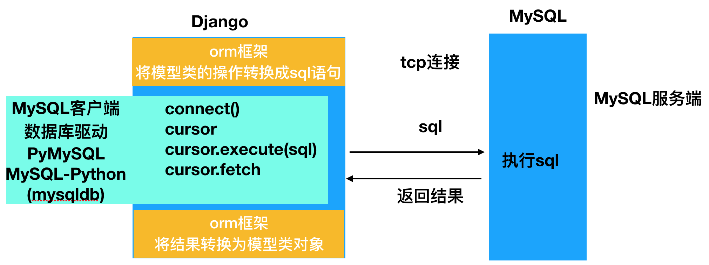

理解ORM

[TOC]
1. ORM作用
省去自己拼写SQL，保证SQL语法的正确性
一次编写可以适配多个数据库
防止注入攻击
在数据库表名或字段名发生变化时，只需修改模型类的映射，无需修改数据库操作的代码
(相比SQL的话，可能需要同步修改涉及到的每一个SQL语句)
2. 使用ORM的方式选择
- 先创建模型类，再迁移到数据库中
- 优点：简单快捷，定义一次模型类即可，不用写sql
- 缺点：不能尽善尽美的控制创建表的所有细节问题，表结构发生变化的时候，也会难免发生迁移错误
- 先用原生SQL创建数据库表，再编写模型类作映射
- 优点：可以很好的控制数据库表结构的任何细节，避免发生迁移错误
- 缺点：可能编写工作多（编写sql与模型类，似乎有些牵强）
头条项目采用先编写原生SQL创建表，之后再编写模型类进行映射的方式。